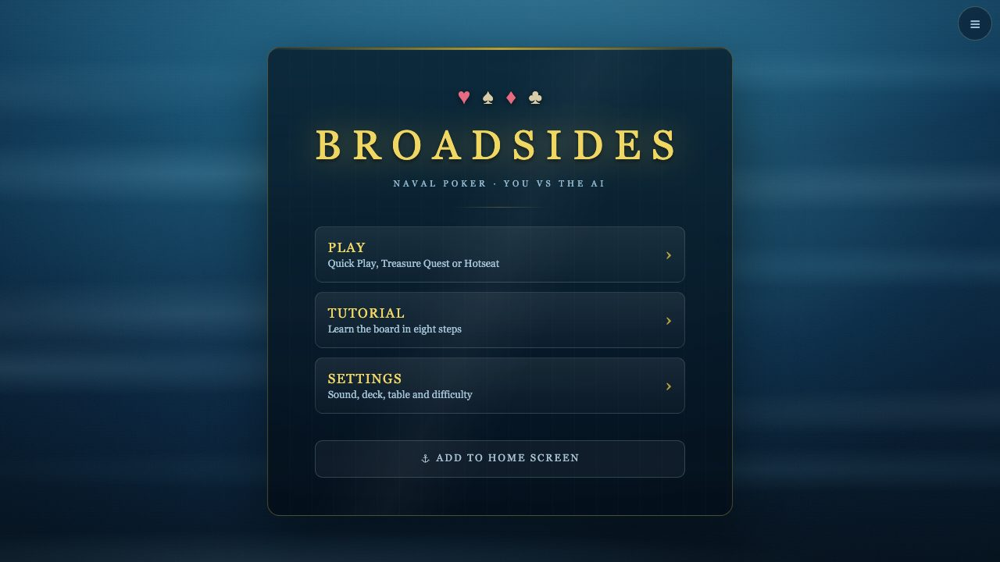
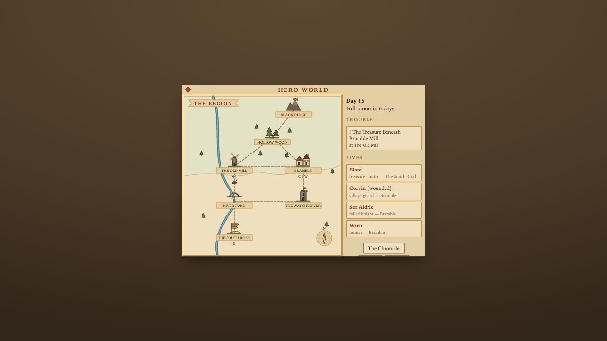
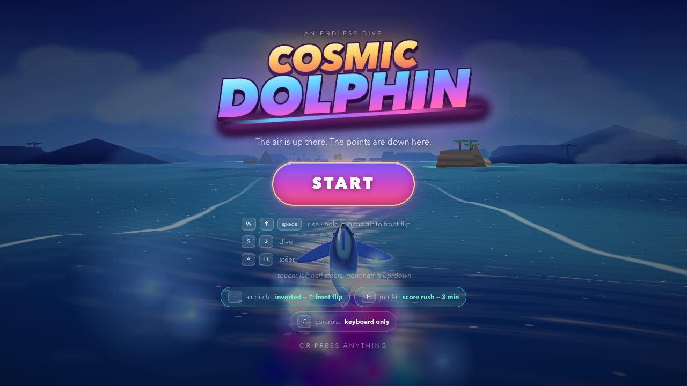
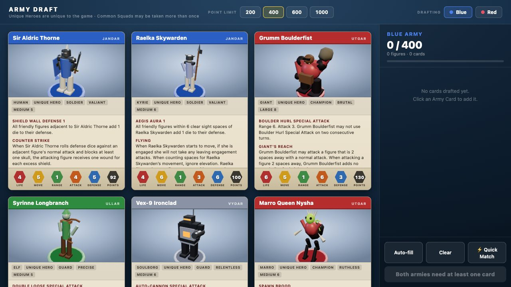
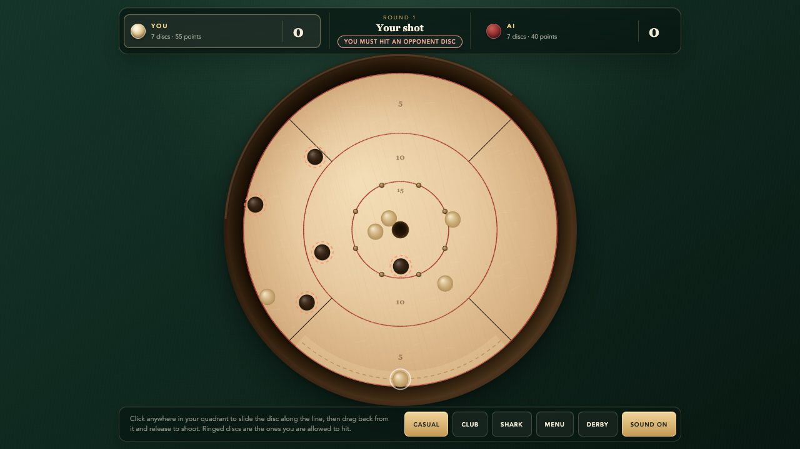
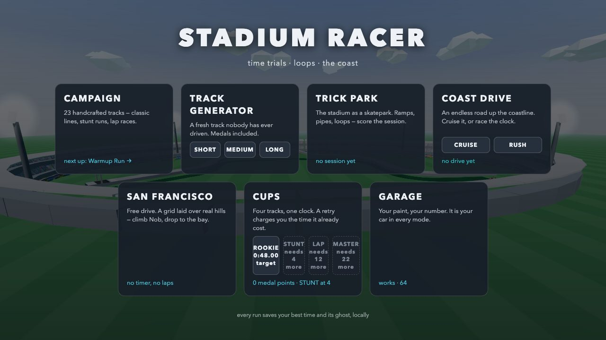
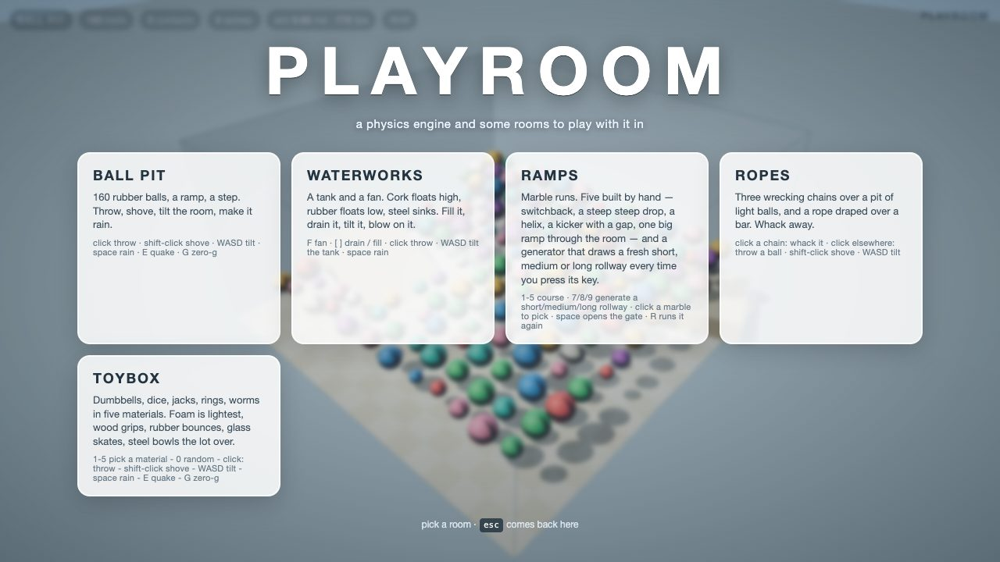
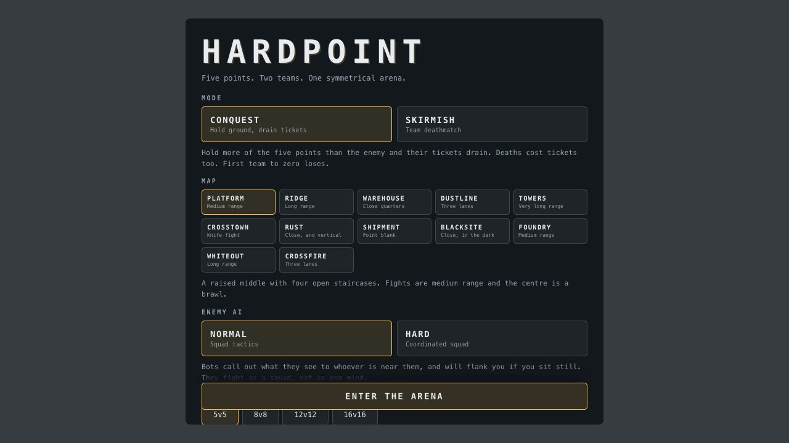
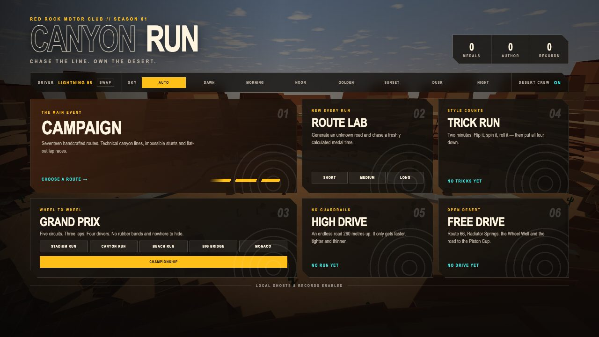

Data leader who ships the tooling.
Eight years running Business Intelligence at Unity, most recently as Director. Since then: a BigQuery data platform with live demos, and an arcade of browser games built from scratch.

construct-analyst
A BigQuery analyst you drive from the terminal or a browser. A business question becomes validated SQL, the result is profiled before anyone builds a conclusion on it, and the answer ships as one self-contained page. It grew into a full platform: five public feeds ingested daily, three storage layers, a contract layer in dbt, and boards with 3D modes.

dbt-agent
A dbt project that deliberately contains no models. It holds 39 tests and 8 freshness checks over the platform's clean layer as sources, so it is a statement of what must be true of the data and nothing else. The modelling stays in one place next door.
# As of 2026-08-17 this project is a contract layer, # not a modelling layer. models/ contains sources.yml # and nothing else. dbt run has nothing to run. $ dbt test $ dbt source freshness # A daily job runs both after the ingests, and the # results land on the pipeline board as contract history.
The arcade
Browser games built from scratch, mostly in plain JavaScript and three.js with no build step, each in its own repository with its own tests. Nine of the ones I keep coming back to.

Broadsides
Naval poker for two. Play cards into lanes; the best five-card hand fires the broadside. Ten-leg voyages, eight tables, a tutorial that spotlights the real board, and the arcade's only full test suite.
196 commits · JavaScript · canvas
Persistent Hero World
A small valley where every adventure leaves something behind, and later quests grow out of that history. Knowledge is a ledger; rumours distort.
130 commits · simulation first, 1-bit Mac
Cosmic Dolphin
An endless runner on the vertical axis. Air is the life bar and the deep is where the score is, so you have to keep crossing the waterline.
88 commits · three.js
HexGround
A 3D hex battlefield in the Heroscape idiom, you against an AI. Draft, terrain, dice, line of sight.
74 commits · three.js
Crokinole
The real 26-inch board's rules over a deterministic disc simulation. The AI plays by simulating candidate shots.
59 commits · canvas · 7 test suites
Stadium Racer
Trackmania-style time trials with medals and ghosts. One data source builds both the road mesh and the collider, so drawn means solid.
40 commits · three.js
Playroom
A rigid-body physics engine written from scratch: sequential impulses, friction, sleep, ropes, buoyant water. three.js only draws.
15 commits · 71 physics tests
Hardpoint
A Ravenfield-style team FPS against bots on eight maps. There is no netcode, which is why most of the code is bot AI.
31 commits · three.js
Canyon Run
The racer moved to a red-rock canyon, with a car that got pushed all the way to Lightning McQueen.
19 commits · three.jsPlayable right here
two public repositories, served from this site
Background
Analyst first, then eight years growing with Unity's ads and engine businesses, ending up running a fifteen-person analytics org across BI, data engineering and analysis.
Silent Circle, Business Analyst
Two years of analysis at a secure-communications company.
Dev Bootcamp, then Vaco
Ruby and Rails. The first commits on this GitHub account, and the 2016 board-game review site that used to live at this address.
Vungle, Performance Optimization Manager
Mobile ad performance, the on-ramp to adtech analytics.
Unity, BI Analyst for Strategic Partnerships
Fifty million dollars of net-new partnerships modelled and closed.
Unity, BI Manager for Demand, then Senior Manager
The ROAS product scaled to sixty percent of network revenue. A supply incentive program added ten percent gross revenue.
Unity, Director of Business Intelligence
Fifteen-plus people across BI leads, data engineering and analysts, covering Unity Ads, the core engine and LiveOps.
Building
The data platform above, the arcade, and a habit of verifying every claim in a real browser.
Get in touch
Open to data leadership and analytics engineering roles, and to conversations about either of the things above. BS Economics and Business Administration, Saint Mary's College of California.
mfurlong64@gmail.com